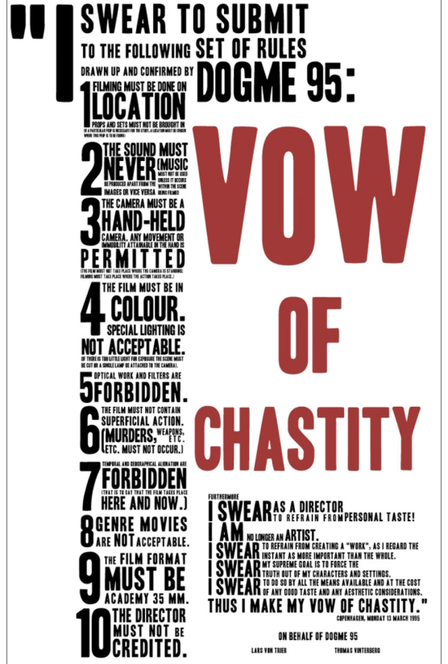
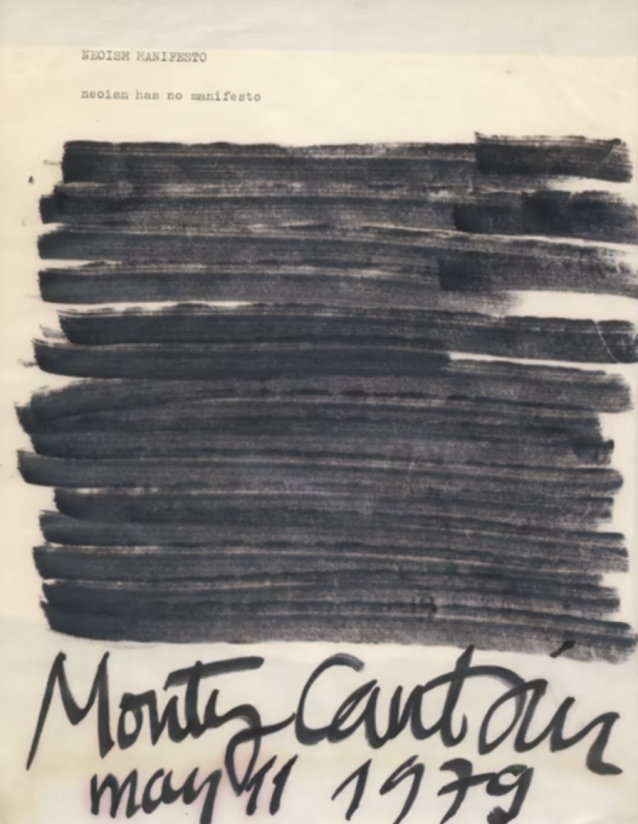

Easier to externalize than to admit. Easier to work than to want. To want and not to have—to want and want,
how that wrung the heart, and wrung it again and again.
Productivity is a tonic for loss—not a replacement for it—and the work of reconstruction is always brutal.


“Everyone needs a blow-your-mind manifesto. It’s just... necessary. And sexy.”
LINK
We think that there are other things more worth using our skills and experience on.
We promote our trade, our education, our culture and our greater awareness of the world.
We do not advocate the abolition of high pressure consumer advertising: this is not feasible.
Nor do we want to take any of the fun out of life. But we are proposing reversal of priorities in favour of the more useful and more lasting forms of communciatoin.